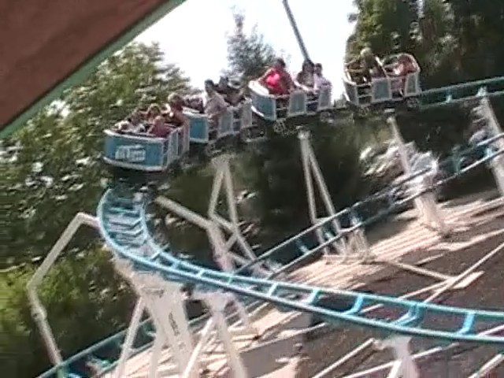

| |
Big Dipper Review

We're here at Michigan's Adventure. For credit whoring, we have the Big Dipper to ride. After cramming into the small cars, we're off. After climbing up the curved lifthill, we then curve into the first drop. For a kiddy coaster, it's actually semi decent. You then go into a small turnaround that sort of looks like the lifthill. This may suprise you, but you actually get a couple of laterals going through that turn. After that you go through another turn with a couple laterals before turning into the station. For a kiddy coaster, it's actually one of the better ones. I'd still only recommend it for credit whores for obvious reasons.
3/10
Location: Michigan's Adventure
Opened: 1999
Built by: Chance Rides
Last Ridden: August 9, 2008
Big Dipper Photos
Home
|